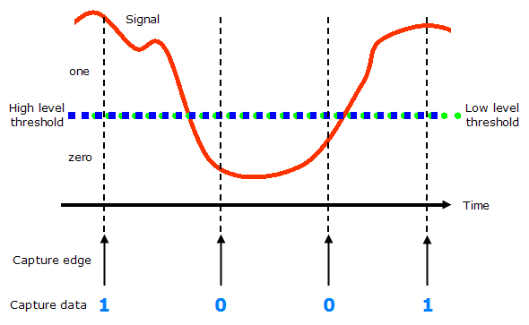

Setting up the pins and the levels
Pin Configuration
Digital capture pins must be o or io pins. They need no further specifications in the pin configuration.
Which of the configured digital pins will be used as capture pins, is defined as part of the pattern setup for digital capture.
To make the rest of the setup easier, we recommend that you create a pin group containing the pins on which you want to capture.
Levels
You define levels for digital capture pins in the same way as for standard digital output pins in the Level Setup.
At the pin electronics' receivers, a simple high/low comparison takes place, so identical values should always be set for the high and low level thresholds, at the intermediate value of the expected data.
Thus, a comparison with a single threshold level is sufficient to determine the capture result (1 or 0).

Next you need to set up the timing.